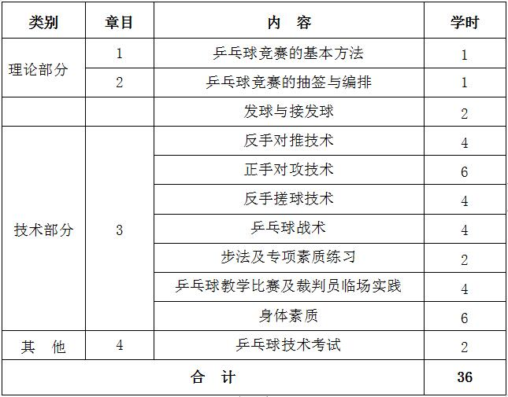
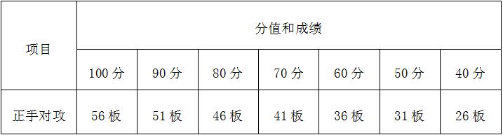

课程管理
|
课程名称 |
公共体育--乒乓球（Ⅱ） |
课程代码 |
TX031097 |
|
课程类型 |
√通识课 □学科（专业）基础课 □专业发展课 |
课程性质 |
√必修课 □选修课 |
|
开课单位 |
体育学院 |
适用专业 |
非体育专业 |
|
总学时数 |
36 |
周学时数 |
2 |
|
课程学分 |
1 |
编 写 人 |
王柯 |
|
编写时间 |
2017.07.20 |
审 批 人 |
刘其龙 |
一、教学目的
乒乓球运动是由两名或两对选手分别站在球台的两端，在球台中间隔放一个球网的球台上，用手中的球拍把对方打过来的球，还击到对方球台的一项球类运动项目。本课主要讲授乒乓球基本理论知识、技术和技能，竞赛组织及竞赛规则， 介绍乒乓球运动的最新的动态与发展趋势。其教学目的为： 1.传授科学健身方法，培养学生的体育兴趣、体育意识、体育品质， 使之养成自觉锻炼身体的好习惯，达到增进身心健康，促进学习和终身体育的目的。 2.发展学生灵敏、速度、力量等身体素质；基本掌握乒乓球基本技术， 初步了解乒乓球比赛的竞赛规则，能够自觉地、经常性地参加乒乓球运动。 3.使学生正确认识乒乓球在现代社会中的重要意义，掌握乒乓球的基本理论知识、技术、技能，学会科学锻炼身体的方法，养成锻炼习惯， 不断提高乒乓球运动水平，为终身体育打下了良好基础。
二、重点与难点
（一）重点：掌握乒乓球基本技术，初步了解乒乓球竞赛编排方法。
（二）难点：熟练运用各技术环节进行比赛。
三、基本内容与要求
理论部分
第1章 乒乓球基本理论
1.1 乒乓球技术要素
1.2 常用术语
1.3 击球的基本环节和动作结构
1.4 球拍的种类与性能
（一）教学目的：使学生了解乒乓球技术的环节与要素，对乒乓球运动有全面的认识。
（二）重点与难点：乒乓球的技术要素的分类与动作结构的形式。
（三）基本内容：乒乓球技术要素、常用术语、基本环节与动作结构以及球拍的性能。
第2章 乒乓球竞赛的组织与编排
2.1 乒乓球竞赛的基本方法
2.2 乒乓球竞赛的抽签与编排
2.3 乒乓球竞赛形式和常用竞赛表格
（一）教学目的：使学生了解乒乓球竞赛基本方法；掌握竞赛的抽签与编排的方法。
（二）重点与难点：乒乓球竞赛的抽签与编排。
（三）基本内容：循环赛和淘汰赛；种子与轮空的位置；各赛制的抽签与编排的方法。
技术部分：
第3章 乒乓球技术
3.1发球与接发球
3.2 反手推挡技术
3.3正手攻球技术
3.4 反手搓球技术
3.5 乒乓球战术
3.6 步法及专项素质练习
3.87教学比赛及裁判员临场实践
（一）教学目的：巩固提高学生发球与接发球以及推挡球和攻球技术， 学会正手对攻技术并合理运用战术，基本掌握反手搓球技术。
（二）重点与难点：技术动作中的正手对攻技术的连续性和结合技术的巩固提高。
（三）基本内容：发球与接发球；反手对推技术； 正手对攻技术；反手搓球技术；乒乓球战术。
第4章 身体素质——中长跑
4.1 起跑和起跑后的加速
4.2 途中跑、终点跑
4.3 中长跑的呼吸
4.4 全程跑：1000米（男生）、800米（女生）
（一）教学目的：通过教学使学生掌握起跑和起跑后的加速、途中跑、终点跑等中长跑的基本技术，学会正确的呼吸方式，发展耐力素质，进一步增强心肺功能。
（二）重点与难点：途中跑技术；中长跑的呼吸。
（三）基本内容：起跑和起跑后的加速、途中跑、终点跑等基本技术；全程跑。
四、授课内容学时分配
五、成绩考核：
（一）考核方式：现场测试。
综合成绩＝平时成绩×30%＋考试成绩×70%，考试成绩＝专项成绩×70%＋身体素质成绩×30%。 每一部分都有定量或定性的评分标准，其中身体素质为每学期的必考项目，身体素质考试内容为男子1000米、女子800米。
（二）考试内容： 乒乓球反手对推、身体素质（1000米或800米）。
（三）评分标准：
1.技能考试：正手对攻（一分钟快推：按完成次数计算评分，连续击球数，不累加。）
（1） 技评考核评分标准：（占技能考试的50%）
① 90分-100分：动作非常正确、协调、挥拍过程极为连惯、发力集中、还原及时。
② 80分-89分：动作正确、协调、挥拍过程较为连惯、发力集中、还原及时。
③ 70分-79分：动作基本正确、节奏感差、无明显错误。
④ 60分-69分：动作僵硬无力、协调性差、但动作无根本性质错误。
⑤ 60分以下：动作有原则性错误。
（2）达标考核评分标准：（占技能考试的50%）
2.平时成绩（30%）
（1）专业实践能力考核内容，占平时成绩总分的60%，考试内容包含：临场裁判占平时成绩总分的40%；模拟授课或模拟说课，占平时成绩总分的20%。
（2）平时作业占平时成绩总分的20%。
（3）课堂考查占平时成绩总分的20%。
3. 身体素质（1000米或800米）：评分标准见表1。
六、教材与参考书目
（一）使用教材：
[1]苏丕仁.《乒乓球运动教程》.高等教育出版社，2004.07.
（二）参考书目：
[1]李建军.《乒乓球》.广西师范大学出版社，2005.07.
[2]中国乒乓球协会.《乒乓球竞赛规则》.人民体育出版社，2011.05.
表1 身体素质考核评分标准

注：数据来源于国家学生体质健康标准（2014年修订）。